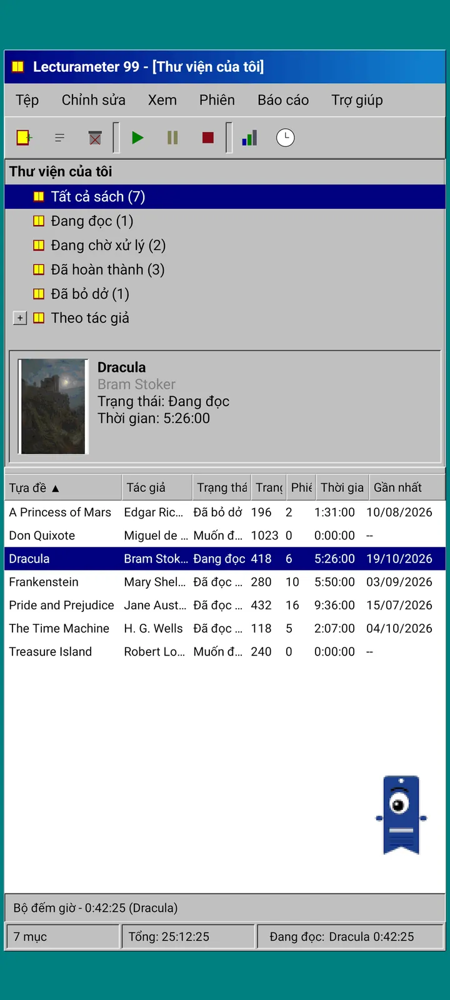
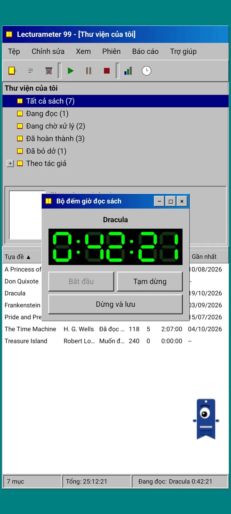
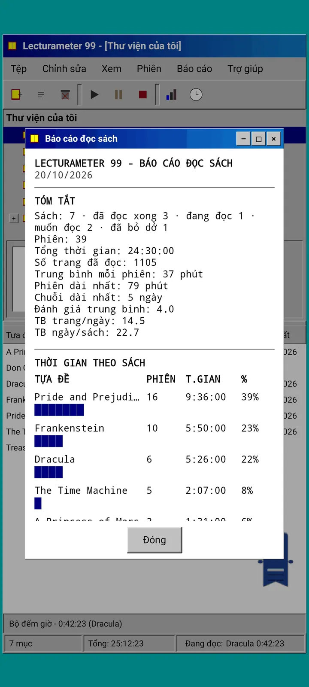
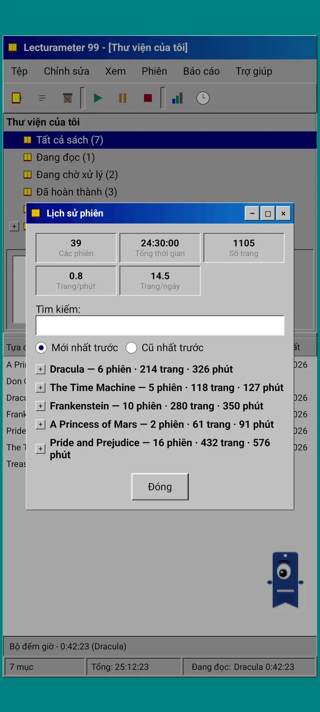
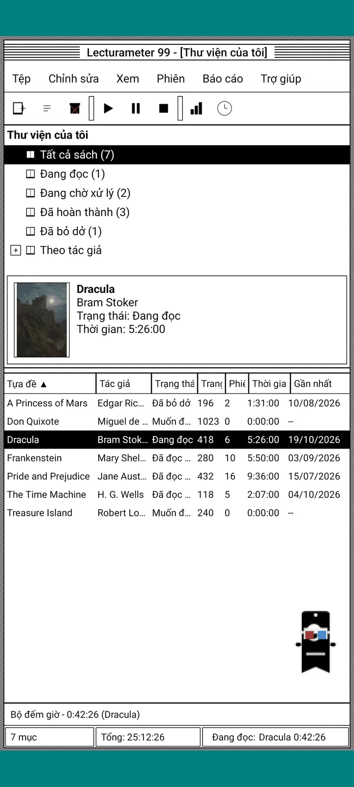
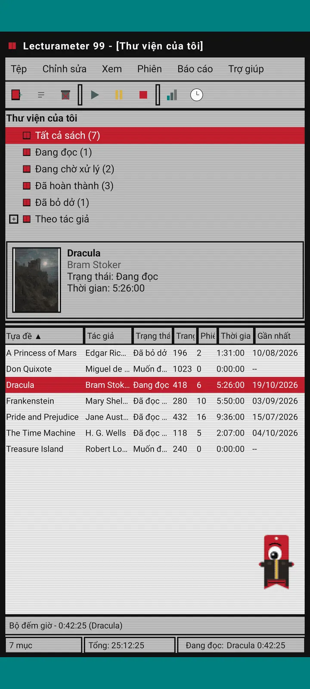
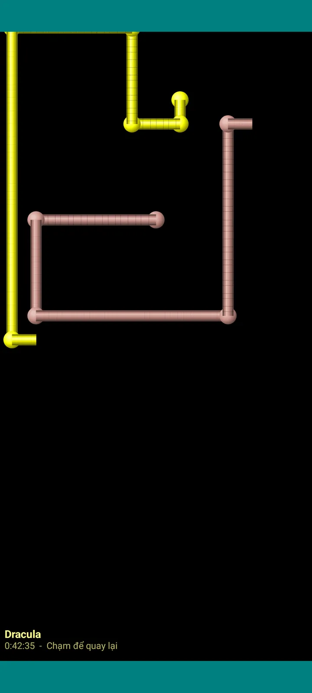

Lecturameter 1999
Lecturameter như thể bạn cài nó từ một đĩa CD-ROM năm 1999. Một ứng dụng khách thay thế cho ứng dụng, với cửa sổ, menu và bảng, mở được các bản sao lưu thật của bạn.

Đó là gì
Một chương trình máy tính để bàn cuối thập niên chín mươi chạy trên điện thoại của bạn. Một cửa sổ trên nền màn hình xanh mòng két, thanh menu, thanh công cụ, cây thư mục, một bảng dày đặc và thanh trạng thái.
- Cây thư viện: tất cả sách, đang đọc, đang chờ xử lý, đã hoàn thành, đã bỏ dở và theo tác giả
- Bảng gồm tiêu đề, tác giả, trạng thái, trang, các phiên, thời gian và lần đọc gần nhất. Chạm vào tiêu đề cột để sắp xếp
- Tìm sách thật, dùng cùng danh mục mà Lecturameter sử dụng
- Nhập và xuất bản sao lưu Lecturameter và CSV Goodreads. Dữ liệu của bạn đi vào và đi ra mà không mất gì

Vì sao nó tồn tại
Một thử nghiệm: dựng lại ý tưởng của Lecturameter từ đầu theo những tiền đề thiết kế hoàn toàn khác, mà không chạm vào ứng dụng thật. Trong tất cả các cách diễn giải lại, bản 1999 là bản mình thích nhất, nên mình đã hoàn thiện nó như một bài tập cho vui và biến nó thành một ứng dụng khách hoàn chỉnh. Nó cố ý đơn giản hơn Lecturameter: đây là một thử nghiệm và về nguyên tắc sẽ không được phát triển thêm.
- Đồng hồ bấm giờ trong một cửa sổ nổi với màn hình LCD màu xanh lá. Nó di chuyển được, thu nhỏ xuống thanh tác vụ và tiếp tục đếm trên thanh trạng thái
- Khi bạn dừng, hộp thoại lưu phiên đọc sẽ hỏi số trang của bạn và tính nhịp đọc, giống hệt Lecturameter
- Các phiên đã lưu chính là các phiên của Lecturameter: chúng quay về ứng dụng hiện đại nếu bạn xuất bản sao lưu Lecturameter 1999 và nhập vào Lecturameter.

Báo cáo đọc sách
Thống kê là một báo cáo in ra: tóm tắt, thời gian từng cuốn với các thanh khối, tốc độ tính bằng trang mỗi ngày, lịch cả năm vẽ bằng ký tự và bảy ngày gần nhất.

Lịch sử phiên đọc
Các phiên đọc được nhóm theo sách trong một cây có dấu cộng và trừ, với năm con số ở trên cùng: số phiên, tổng thời gian, số trang, trang mỗi phút và trang mỗi ngày.

Lưu phiên đọc
Ngày, số phút, trang đầu và trang cuối, bình luận. Phần tóm tắt tính số trang và nhịp đọc khi bạn gõ. Nếu bạn đến trang cuối, ứng dụng sẽ hỏi bạn đã đọc xong cuốn sách chưa.

Pagi 99
Pagi cũng du hành về năm 1999: dạng pixel và tự do trên màn hình như các trợ lý văn phòng thời đó. Bạn có thể kéo nó, nó nói một câu khi bạn chạm vào và hiện các mẹo trong những bóng thoại màu vàng.
Chủ đề
Classic 98 miễn phí và là mặc định. Gói chủ đề thêm sáu chủ đề nữa, mỗi chủ đề có hình nền và âm thanh riêng.

Chọn từ menu Xem
Xem, Chủ đề... mở một cửa sổ với bảy chủ đề. Thay đổi áp dụng cho mọi cửa sổ, đồng hồ bấm giờ và Pagi cùng lúc.
- Classic 98, miễn phí và là mặc định: cửa sổ màu xám, thanh tiêu đề xanh navy và màn hình nền xanh mòng két
- Gói chủ đề: 1984, Gumdrop, Memory, Towers, Core và 8-bit
- Mỗi chủ đề mang theo hình nền màn hình và âm thanh riêng cho thao tác chạm, cửa sổ và đồng hồ bấm giờ
- Xem, Âm thanh chủ đề sẽ tắt âm thanh nếu bạn đọc trong yên lặng

Classic 98
Cửa sổ màu xám, thanh tiêu đề xanh navy và màn hình nền xanh mòng két. Miễn phí, đây là chủ đề ứng dụng mở lên mặc định.

1984
Một màn hình nền đen trắng một bit, với các họa tiết chấm và cửa sổ vuông vức.

Gumdrop
Nhựa màu trong mờ, nút bo tròn và các sọc ở nền.

Memory
Các menu của một máy chơi game đĩa thập niên chín mươi, với các tông xanh đậm.

Towers
Một máy chơi game đĩa khác của thập niên chín mươi, xanh đêm với các đường kẻ xanh nhạt.

Core
Một bảng điều khiển đen và xanh lá, như một màn hình không bao giờ tắt.

8-bit
Điểm ảnh to, ít màu và chữ vuông vức.

Dùng thử trước khi trả tiền
Chạm vào một chủ đề bị khóa và cả ứng dụng sẽ đổi sang chủ đề đó. Nếu bạn đóng mà không mua, chủ đề trước đó sẽ quay lại.
Trình bảo vệ màn hình
Chúng chỉ xuất hiện khi đồng hồ bấm giờ đang chạy và bạn để yên điện thoại. Chúng chờ 1, 3 hoặc 5 phút, hoặc không bao giờ. Chạm một lần là quay lại và đồng hồ vẫn tiếp tục đếm.

Sách bay
Những cuốn sách pixel vỗ bìa bay ngang màn hình đen.

Cánh đồng chữ
Chữ cái từ nhiều bảng chữ cái trôi qua, như một bầu trời sao.

Ống trang giấy
Những đường ống làm từ trang giấy tự vẽ cho đến khi lấp đầy màn hình.

Pagi nảy
Pagi nảy qua lại giữa các cạnh màn hình.

Đồng hồ đọc sách
Thời gian phiên đọc bằng các chữ số LCD lớn.

Trang phục cho Pagi
Tám bộ trang phục cho Pagi 99. Bạn chọn chúng trong Xem, Trang phục của Pagi..., và có thể thử trước khi trả tiền.
- Máy cát-xét
- Mũ lưỡi trai đội ngược
- Kính 3D
- Kính râm neon
- Đĩa mềm cầm trên tay
- Áo khoác da
- Thú cưng bỏ túi
- Vương miện bìa cứng
Cửa hàng
Ứng dụng miễn phí và đầy đủ để ghi lại việc đọc của bạn. Những gì bạn có thể mua chỉ thay đổi vẻ ngoài của nó.
Toàn bộ ứng dụng, không giới hạn thời gian.
- Thư viện, tìm kiếm, đồng hồ bấm giờ và các phiên đọc
- Báo cáo đọc sách và lịch sử phiên đọc
- Sao lưu Lecturameter và CSV Goodreads, nhập và xuất
- Chủ đề Classic 98 và Pagi 99
- Không tài khoản và không quảng cáo
Thanh toán một lần, không đăng ký trả phí.
- Gói chủ đề, €3.49: 6 chủ đề có hình nền và âm thanh, cộng thêm các trình bảo vệ màn hình
- Trình bảo vệ màn hình, €1.99: 5 trình bảo vệ màn hình
- Trang phục Pagi, €1.99: 8 bộ trang phục
- Trọn bộ 1999, €4.49: chủ đề, trình bảo vệ màn hình và trang phục
Tiền boa tùy chọn trong menu Trợ giúp, nếu bạn muốn mời mình một ly cà phê.
Chủ đề và trang phục có thể thử trực tiếp trước khi trả tiền. Nếu bạn đóng mà không mua, thứ bạn có trước đó sẽ quay lại.
Khác gì so với Lecturameter
Giống Lecturameter
- Cùng dữ liệu: sách, các phiên đọc, trạng thái, điểm số và ghi chú. Tệp sao lưu giống nhau ở cả hai ứng dụng.
- Tìm sách theo tiêu đề hoặc tác giả.
- Đồng hồ bấm giờ thật: nó tiếp tục đếm ở chế độ nền và cả khi bạn đóng ứng dụng.
- Không tài khoản, không quảng cáo, không cần kết nối ngoài việc tìm sách.
- Cùng các ngôn ngữ như Lecturameter.
Chỉ có trong phiên bản 1999
- Giao diện máy tính để bàn năm 1999. Không có Material.
- Cửa sổ thật: bạn kéo chúng, thu nhỏ chúng và đóng chúng bằng dấu chéo.
- Báo cáo đọc sách dạng văn bản, với lịch vẽ bằng ký tự.
- Menu ngữ cảnh khi nhấn giữ và phím tắt nếu bạn kết nối bàn phím.
- Pagi 99 dạng pixel với các bóng mẹo.
- Các chủ đề tùy chọn có hình nền và âm thanh riêng, trình bảo vệ màn hình khi đồng hồ chạy và trang phục cho Pagi.
Những gì cố ý bỏ qua
- Không có Pro và không đăng ký trả phí. Ghi lại việc đọc hoàn toàn miễn phí, cửa hàng chỉ bán vẻ ngoài.
- Không có thử thách, bingo, Wrapped hằng năm hay widget.
- Không có phiên đắm chìm, âm thanh nền hay sao lưu Google Drive. Bản sao lưu được lưu thành một tệp.
Thử nghiệm kín
Lecturameter 1999 đang trong thử nghiệm kín trên Google Play. iOS sẽ đến sau, chưa có ngày cụ thể.
- Tham gia nhóm groups.google.com/g/lecturameter-1999
- Đăng ký làm người thử nghiệm tại play.google.com/apps/testing/com.lecturameter.r1999
- Cài đặt từ Google Play
Đang thử nghiệm kín trên Google Play, iOS sẽ đến sau. Đọc bài viết trên blog để biết nó từ đâu ra và nên mong đợi điều gì.